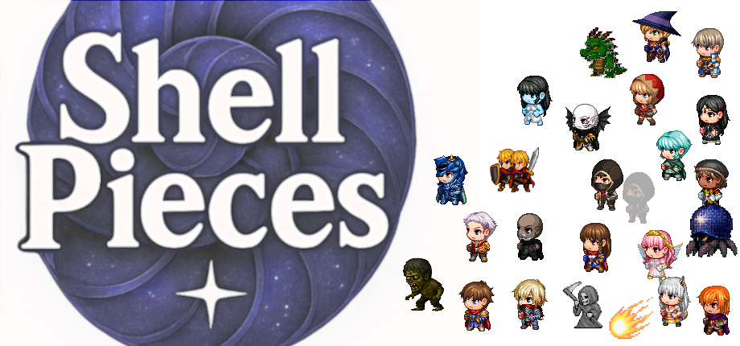

スライス設定
透明化
透明化する色を選ぶ
選択色を透明化
コマ幅:
コマ高:
横コマ数:
縦コマ数:
Xオフセット:
Yオフセット:
ズーム倍率:
適用
切り分け実行
ラインスライス
上一行で切る
左一列で切る
1コマ切る
スライスプレビュー
部分スライスプレビュー
1コマ切る
スライス後のコマ一覧
配置グリッド
マス横数:
マス縦数:
セル幅(px):
セル高(px):
反映
名前を付けて保存
（プリセットを選択）
読込
削除
PNGとして保存
微調整
選択中:
なし
左右反転
Xオフセット:
Yオフセット:
↑
↓
←
→
リセット
トリミング
左:
上:
右:
下:
リセット
↓頑張って作ったゲームです！
500円なのでよかったら買ってみてね！
